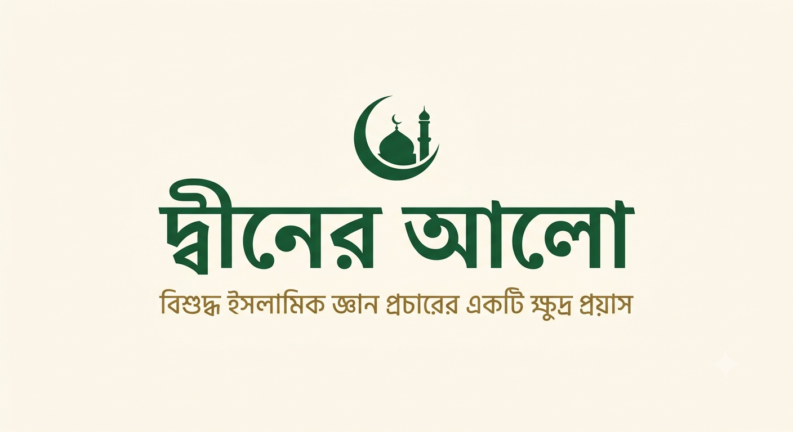

বিশুদ্ধ ইসলামিক জ্ঞান প্রচারের একটি ক্ষুদ্র প্রয়াস
দ্বীনের আলো ওয়েবসাইটে আপনাকে স্বাগতম। কুরআন, হাদীস, ফিকহ এবং ইসলামিক শিক্ষার নির্ভরযোগ্য জ্ঞান মানুষের কাছে পৌঁছে দেওয়াই এই উদ্যোগের মূল উদ্দেশ্য।
মাওলানা ও মুফতি। প্রাথমিক শিক্ষা জামিয়া ইসলামিয়া আশরাফুল উলুম, কেশপুরে। উচ্চতর শিক্ষা জামিয়া ইসলামিয়া রিরহি তাজপুরা, সাহারানপুরে।
দাওরায়ে হাদীস সম্পন্ন করেছেন জামিয়া ইসলামিয়া দারুল উলুম ওয়াকফ, দেওবন্দ থেকে এবং ইফতা (ইসলামিক ল) সম্পন্ন করেছেন আব্দুল্লাহ ইবনে মাসউদ ফিকহ একাডেমি, দেওবন্দ থেকে।
বর্তমানে জামিয়া আজহারুল উলুম, বর্ধমানে খিদমত করছেন। এর আগে দুই বছর মাদ্রাসা সিরাজুল উলুম, তমলুকে শিক্ষকতা করেছেন। বর্তমানে রাষ্ট্রবিজ্ঞান (Political Science) নিয়ে পড়াশোনা করছেন।
লক্ষ্য ও মিশন: সমাজকে ইসলামিক ও রাজনৈতিকভাবে সচেতন করা, মানুষকে জ্ঞান ও চিন্তার মাধ্যমে গড়ে তোলা এবং একটি সচেতন ও আদর্শ সমাজ নির্মাণে ভূমিকা রাখা।
পবিত্র কুরআনের শিক্ষা, তাফসীর ও বিভিন্ন গুরুত্বপূর্ণ বিষয়।
হাদীসের শিক্ষা ও সুন্নাহ সম্পর্কিত নির্বাচিত আলোচনা।
ফিকহ ও সমসাময়িক মাসআলা-মাসায়েল সম্পর্কিত আলোচনা।
ইসলাম, সমাজ ও সমসাময়িক বিষয় নিয়ে বিভিন্ন প্রবন্ধ।
ইনশাআল্লাহ, নিয়মিতভাবে ইসলামিক প্রবন্ধ, কুরআন-হাদীস, ফিকহ এবং শিক্ষামূলক লেখা প্রকাশ করা হবে।
ই-মেইল:
mftskamanurrahamanqasemi@gmail.com
মোবাইল:
7364877946
যোগাযোগের সময়: আসর থেকে মাগরিব পর্যন্ত